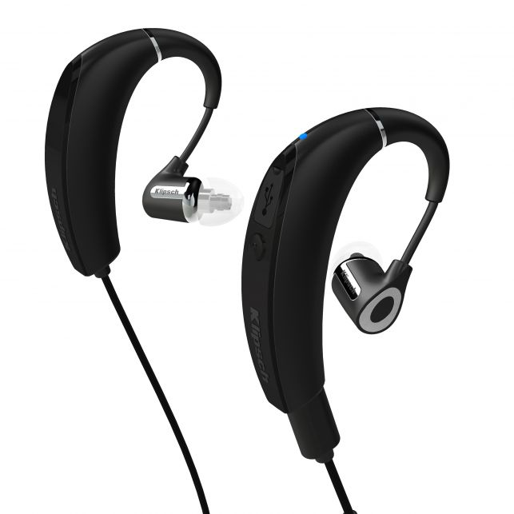

Ausinės
- Ausinės - dedamos ant ausų, kišamos į ausis, belaidės ...
Į ausis įstatomos ausines Automobiliniai šakotuvai Kriptovaliutų piniginės | Bitcoin piniginės Radijo stotelės | Racijos Mikrofonai Žaidimų pulteliai Android Automobiliniai inverteriai 18650 baterijos | Pakraunami akumuliatoriai Akumuliatorių/Baterijų Įkrovikliai Žaidimų konsolės Kompiuterinė technika - Ausinės - HiFi Centras
Mes naudojame slapukus siekdami užtikrinti Jūsų naršymo ir apsipirkimo sklandumą. Paspaudę „sutinku“ arba toliau tęsdami naršymą svetainėje Jūs sutinkate su slapukų naudojimu. - Ausinės | „Bluetooth®“ ir belaidės ant ausų dedamos ...
Jau 21 metus firma Muzikis Garažas specializuojasi garso aparatūros ir namų sistemų projektavime prekyboje ir instaliacijoje. Vertiname sprendimų paprastumą, patogų valdymą, pritaikymą prie patalpos interjero, racionalumą. Kiekvieną savo projektą įgyvendiname kruopščiai ir atsakingai iki pilno klientų lūkesčių patenkinimo. - Specializuota ausinių parduotuvė Vilniuje - Ausines.com
Specializuota garso/audio ausinių elektroninė parduotuvė. Nemokamas pristatymas. Didžiausias sennheiser, koss ausinių pasirinkimas mažiausiomis kainomis! - ausines.lt - Specializuota Audio Ausinių Elektroninė ...
© 2019 HiFi Centras. Visos teisės saugomos. Sprendimas: TVS.ltTVS.lt - Laidinės ir belaidės ausinės internetu pigiau – TECHNORAMA
Stilingos ir patogios ausinės be laidų, su mikrofonu už gerą kainą. NEMOKAMAS pristatymas per 3 d. d. visoje Lietuvoje ir 14 dienų grąžinimo garantija! - Geriausios ausinės, kaip išsirinkti? (3 ... - Ausines.com
Belaidės ausinės, mikrofonai, ausinės su mikrofonu gera kaina! Marshall, Razer, Beats, JBL, Audio-Technica ir kt. Ausinės sportui, žaidimams ir daugelis kitų. - Ausinės | MuzikosGuru.lt
Pioneer SE-MASTER1 aplink ausis uždedamos studijinės ausines . Kaina: 2,999.00 € Noriu UŽSISAKYTI. FOCAL Utopia High-End Audiofilinės aplink ausis dedamos ausinės, atviro tipo . Kaina: 3,999.00 € Noriu UŽSISAKYTI. Audio Technica ATH-L5000 High-Eng Dinaminės ausinės ... - TOP Ausinės Internetu. Milžiniškas Pasirinkimas Žema kaina ...
Egzistuojant plačiam pasirinkimui – egzistuoja ir tokio dydžio vartotojų būrys, kuris prieš pirkdamas pageidauja žinoti pagrindinę informaciją padėsiančią jam rasti kokybiškiausias ausines. 1. - Ausinės | Bluetooth ausinės - UrmoKaina.lt
Susipažinkite su mūsų plačiu ant ausų dedamų ausinių asortimentų, įskaitant „Bluetooth®“ ir belaides ausines, padėsiančias mėgautis mėgstama muzika keliaujant.

Toggle navigation ☰ Gamintojai Acoustic Energy Audio-Technica Audiovector Beyerdynamic Bluesound Chord Cornered Audio Custom Design DALI Denon ELAC Elipson FiiO Gold Note Harbeth Hegel iBasso JAYS JL Audio KEF Klipsch Marantz Melodika NuPrime POLK Audio Pro-ject PYLON Audio Reloop HiFi Simply Analog TAGA Harmony Prekės Ekspozicijos išpardavimas Stereo aparatūra Stereo sistemos Stereo stiprintuvai Tinklo grotuvai Plokštelių grotuvai CD Grotuvai DAC (keitikliai) Mini HiFi Korekciniai stiprintuvai Namų kino aparatūra Namų kino sistemos Namų kino stiprintuvai Blu-ray / Media grotuvai Soundbar sistemos Kolonėlių komplektai Garso kolonėlės Kolonėlių komplektai Grindinės Lentyninės Centrinės Erdvinio garso Žemų dažnių Soundbar sistemos Nešiojamos kolonėlės Aktyvios Įmontuojamos Pakabinamos Lauko Belaidės sistemos Bluesound Denon Multiroom Audio Pro Ausinės Įstatomos į ausis Dedamos ant ausų Belaidės True Wireless Ausinių stiprintuvai Nešiojami grotuvai Kabeliai Kolonėlių kabeliai su antgaliais Matuojami kolonėlių kabeliai Tarpblokiniai HDMI kabeliai Skaitmeniniai Maitinimo Žemų dažnių kolonėlėms Mini Jack Antgaliai Baldai Spintelės aparatūrai Spintelės televizoriui Kolonėlių stovai Priedai Priedai Patefonų galvutės Vinilo priežiūra Instaliacijai Spygliai ir padukai Auto Aparatūra Grotuvai Garsiakalbiai Stiprintuvai DSP Procesoriai Kabeliai Priedai Išpardavimas Naujienos Kontaktai Informacija Apie mus Parkavimas Remonto paslaugos Apmokėjimo būdai TAX Free Krepšelis 0 items Jūsų krepšelis tuščias Kalba Kalba: Valiuta: EUR Prisijungti Mano paskyra Pirkti Pageidaujami Palyginti Įveskite ieškomos prekės pavadinimą
Ausinės
Pagrindinis AusinėsVisos prekės
Stereo aparatūra Stereo komplektai Stereo stiprintuvai Tinklo grotuvai Plokštelių grotuvai CD Grotuvai DAC (keitikliai) Mini HiFi sistemos Korekciniai stiprintuvai Namų kino aparatūra Namų kino sistemos Namų kino stiprintuvai Blu-ray / Media grotuvai Garso kolonėlės Kolonėlių komplektai Grindinės kolonėlės Lentyninės kolonėlės Centrinės kolonėlės Erdvinio garso kolonėlės Žemų dažnių kolonėlės namams Soundbar sistemos Nešiojamos kolonėlės Aktyvios kolonėlės Įmontuojamos kolonėlės Pakabinamos kolonėlės Lauko kolonėlės Išmanios garso kolonėlės Belaidės sistemos (Multiroom) Bluesound DENON Multiroom Audio Pro Multi-room Ausinės Dedamos ant ausų (on-ear) Įstatomos į ausis (in-ear) Belaidės ausinės True wireless Ausinių stiprintuvai Nešiojami grotuvai Bluetooth imtuvai ausinėms Kabeliai garso aparatūrai Kolonėlių kabeliai su antgaliais Matuojami kolonėlių kabeliai Tarpblokiniai kabeliai HDMI kabeliai Skaitmeniniai kabeliai Maitinimo kabeliai Kabeliai žemų dažnių kolonėlėms Mini Jack Antgaliai Baldai Spintelės aparatūrai Spintelės televizoriui Kolonėlių stovai Priedai Priedai garso aparatūrai Patefonų galvutės Vinilo priežiūra Instaliacijai Spygliai ir padukai kolonėlėms Auto-audio Grotuvai automobiliams Garsiakalbiai Komponentiniai garsiakalbiai Bendraašiai garsiakalbiai Žemų dažnių garsiakalbiai Žemų dažnių kolonėlės automobiliams Garsiakalbiai pagal automobilį Stiprintuvai DSP procesoriai Kabeliai auto-aparatūrai Priedai automobiliams Išpardavimas Naudota HiFi garso aparatūra Ekspozicijos išpardavimasPrekių ženklai
GERAIFiltruoti pagal
Kategorijos
Kategorijos
Ausinių stiprintuvai (9) Belaidės ausinės (24) Bluetooth imtuvai ausinėms (3) Dedamos ant ausų (on-ear) (38) Nešiojami grotuvai (7) True wireless (8) Įstatomos į ausis (in-ear) (22)Spalva
Spalva
Juoda (21) Balta (9) Pilka (6) Raudona (2) Sidabro (3) Geltona (1) Mėlyna (1) Žalia (1) Rožinė (1) Ruda (3) Violetinė (1)Prekės ženklas
Prekės ženklas
Audio-Technica (26) Beyerdynamic (7) DALI (2) DENON (9) FiiO (19) JAYS (5) Klipsch (4) Marantz (1) TAGA Harmony (2) iBasso (5)Svoris
Svoris
0kg - 1kg
Kaina
Kaina
19,00 € - 979,00 €
Ausinės
Ausinės yra geriausias pasirinkimas girdėti aukštos kokybės garsą už sąlyginai nedidelius pinigus.
Platiname tik patikimų ir žinomų gamintojų produkciją, kaip Audio-Technica, Focal, Beyerdynamic, FiiO, SoundMagis, JAYS .
Padėsime Jums išsirinkti tinkamiausią prekę už geriausią kainą.
Rasta 85 prekės(-ių).
Rikiuoti pagal: Pavadinimas, A - Z Aktualumas Pavadinimas, A - Z Pavadinimas, Z - A Kaina, mažiausia - didžiausia Kaina, didžiausia - mažiausia Filtras Rodoma 1-20 iš 85 prekės(-ių)Aktyvūs filtrai
Greita peržiūraAudio-Technica ATH-A1000Z uždaros Hi-Fi lygio ausinės
519,00 € Nauji 53mm garsiakalbiai, gaminami Japonijoje Aukštos raiškos garso atkūrimas Išskirtinė raudono metalo apdaila Inovatyvi 3D galvos... -30,00 € Greita peržiūraAudio-Technica ATH-A550Z uždaros over-ear ausinės
129,00 € 159,00 € Uždaro tipo kokybiškos ant ausų dedamos ausinės. 53mm naujo tipo garsiakalbiai Solidi juoda matinė apdaila Inovatyvus 3D galvos... -40,00 € Greita peržiūraAudio-Technica ATH-A990Z uždaros over-ear ausinės
240,00 € 280,00 € Uždaro tipo aukštos kokybės ant ausų dedamos ausinės. 53mm naujo tipo garsiakalbiai, gaminami Japonijoje Suderinamos su aukštos raiškos... Greita peržiūraAudio-Technica ATH-AD500X atviro tipo HiFi ausinės
165,00 € Atviro tipo HiFi ausinės. 53mm garsiakalbiai ir CCAW ritės itin natūralaus garso perdavimui Gilus ir stiprus bosas, nuostabus vokalo... -30,00 € Greita peržiūraAudio-Technica ATH-AD700X atviro tipo HiFi ausinės
179,00 € 209,00 € Atviro tipo HiFi ausinės. 53mm garsiakalbiai ir CCAW ritės itin natūraliam garso perdavimui Gilus ir stiprus bosas, nuostabus vokalo... -46,00 € Greita peržiūraAudio-Technica ATH-AD900X atviro tipo HiFi ausinės
299,00 € 345,00 € Atviro tipo audiofilinės kokybės HiFi ausinės. Turtingas ir erdvus garsas naujai klausymo patirčiai. 53mm garsiakalbiai ir CCAW ritės itin... Greita peržiūraAudio-Technica ATH-ANC300TW triukšmą slopinančios...
249,00 € Aukštos kokybės "true wireless" tipo belaidės ausinės su aktyvia triukšmo slopinimo sistema. Maksimali baterijos trukmė vieno pakrovimo metu:... Greita peržiūraAudio-Technica ATH-ANC500BT belaidės ausinės su aktyviu...
99,00 € ATH-ANC500BT QuietPoint® belaidės ausinės naudoja aktyvią triukšmo slopinimo technologiją, užtikrinančią komfortišką muzikos klausymą net ir itin... Greita peržiūraAudio-Technica ATH-ANC70 ausinės su aktyvia triukšmo...
134,90 € Sumažina išorinį triukšmą iki 90% Galingi 40 mm garsiakalbiai Prabangi "memory foam" medžiaga ant galvos lankelio ir ausų padukų... Nauja Greita peržiūraAudio-Technica ATH-ANC700BT belaidės ausinės su triukšmo...
169,00 € Belaidės Bluetooth ausinės su aktyvia triukšmo slopinimo sistema. 25val baterijos tarnavimo laikas "QuitePoint" triukšmo slopinimo... Greita peržiūraAudio-Technica ATH-AR3iS ausinės, uždedamos ant ausų, su...
64,99 € Uždaro tipo, dedamos ant ausų Specialiai pritaikyti 40mm garsiakalbiai Lengvos, sulankstomos Galingas ir tuo pačiu detalus garsas... Greita peržiūraAudio-Technica ATH-CK3TW true wireless belaidės ausinės
99,00 € Iki 6 valandų grojimo vienu pakrovimu Papildomos 24val grojimo naudojant pakrovimo dėžutę Valdykite muziką, skambučius bei garsą su... Greita peržiūraAudio-Technica ATH-CKS5TW True Wireless ausinės
159,00 € Baterijos tarnavimo laikas iki 15 valandų plius papildomos 30 valandų naudojant pakrovimo dėklą. Mygtukai abiejose ausinėse leidžia... Greita peržiūraAudio-Technica ATH-LS50iS ausinės su lankeliu...
99,00 € Puikus pasirinkimas sportuojantiems ar aktyvų laisvalaikį mėgstantiems gero garso mėgėjams. Gyvas garsas Atjungiamas kabelis su A2DC... Greita peržiūraAudio-Technica ATH-M50X monitorinės ausinės
149,00 € Profesionalios monitorinės ausinės. Geriausiai vertinamos M serijos ausinės - ATH-M50 jau daugelį metų yra naudojamos geriausių garso... -10,00 € Greita peržiūraAudio-Technica ATH-M50xBT ausinės su Bluetooth
189,00 € 199,00 € Legendinių M50X ausinių Bluetooth versija. Ypatingai švarus garsas ir jokių laidų 40 baterijos tarnavimo trukmė Valdymo mygtukai... Greita peržiūraAudio-Technica ATH-M70X profesionalios monitorinės ausinės
289,00 € Aukščiausios klasės profesionalios monitorinės uždaro tipo ausinės. Sukurtos itin tiksliam garso atkūrimui. Kruopščiai pagamintos su... -20,00 € Greita peržiūraAudio-Technica ATH-MSR7b Hi-res ausinės
229,00 € 249,00 € Aukštos raiškos ausinės su balansine jungtimi (kompelekte yra ir standartinis kabelis). Itin detalus ir natūralus garsas, puiki pagaminimo... -50,00 € Greita peržiūraAudio-Technica ATH-PDG1 on-ear ausinės su mikrofonu
169,00 € 219,00 € Aukštos kokybės atviro tipo Audio-Technica ausinės su mikrofonu. Puikus pasirinkimas kompiuterinių žaidimų mėgėjams, norintiems girdėti... -50,00 € Greita peržiūraAudio-Technica ATH-PG1 on-ear ausinės su mikrofonu uždaros
169,00 € 219,00 € Premium klasės ausinės su mikrofonu mėgstantiems žaidimus. 44mm garsiakalbiai galingam ir tiksliam garso atkūrimui Uždaro tipo... Rodoma 1-20 iš 85 prekės(-ių) 1 2 3 … 5 Tęsti Atgal į viršų HiFi garso aparatūra. Projektavimas - Pajungimas - Servisas
Teikiame savo klientams kokybiškos garso aparatūros parinkimo, derinimo bei projektavimo paslaugas jau nuo 2013 metų. Projektuojame stereo, namų kino, multiroom bei "custom install" garso sistemas. Taip pat teikiame garso aparatūros remonto paslaugas.
Esame oficialūs Acoustic Energy, TAGA Harmony, PYLON Audio, Reloop HiFi, Custom Design, Simply Analog, Melodika gamintojų atstovai Lietuvoje.
Facebook YouTube Instagram
Informacija
Apie mus Sąlygos ir taisyklės Atsiskaitymas / Pristatymas Privatumo politika Tax-freeSusisiekite su mumis
Susisiekite su mumis Kauno g. 31, Vilnius Skambinti: +370 645 40688 El. paštas: [email protected]DARBO LAIKAS
I-V: 10:00 - 19:00 (p.p. 14-15val.)
VI: +370 645 40688
Sužinokite naujienas pirmieji!
Prenumeratos galėsite atsisakyti bet kuriuo metu. Tam tikslui mūsų kontaktinę informaciją rasite parduotuvės taisyklėse.
Newsletter © 2019 Sukurta UAB "Garso namai" . Visos teisės saugomos. close Shopping CartPrisijungti
Registruotis
Esamo vartotojo prisijungimas Prisijungti prie paskyros
Atstatyti slaptažodį
Naujo vartotojo registracija
UždarytiPrisijungti
Registruotis
Esamo vartotojo prisijungimas Prisijungti prie paskyros
Atstatyti slaptažodį
Naujo vartotojo registracija
Uždaryti